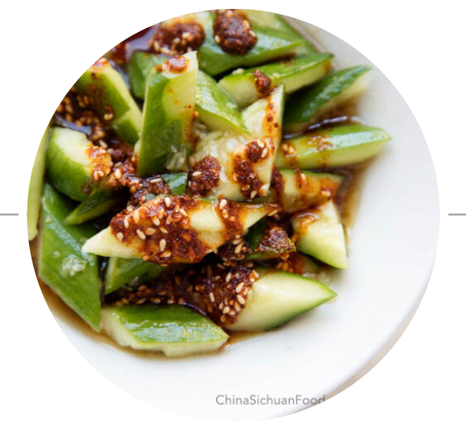

Chinese Cucumber Salad

Description
Chinese style smashed cucumber salad
Ingredients
- 1 fresh English cucumber , or two smaller ones, around 350g
- 3 garlic cloves , mashed and then chopped
- 1/4 tsp. sugar
- salt to taste
- 1 tbsp. sesame oil
- 1 tbsp. light soy sauce , optional
- 1 tsp. black vinegar , optional
- 1 ~2 tsp. chili oil to taste , optional
Directions
- For long English cucumber, wash the cucumber and peel off tough skins. For small cucumber, remove the two ends.
- Smash with a wide kitchen knife (like Chinese slicing knife) until the cucumber is well crushed. Then cut into one bite pieces.
- Transfer all cucumber cubes into a bowl. Mix well with mashed garlic, salt and sugar.
- Or further add light soy sauce and vinegar to make a more strong version.
- Or add chili oil for a hot version.